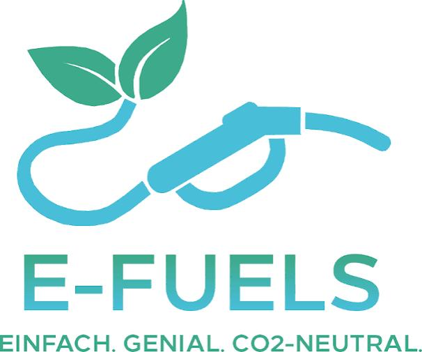
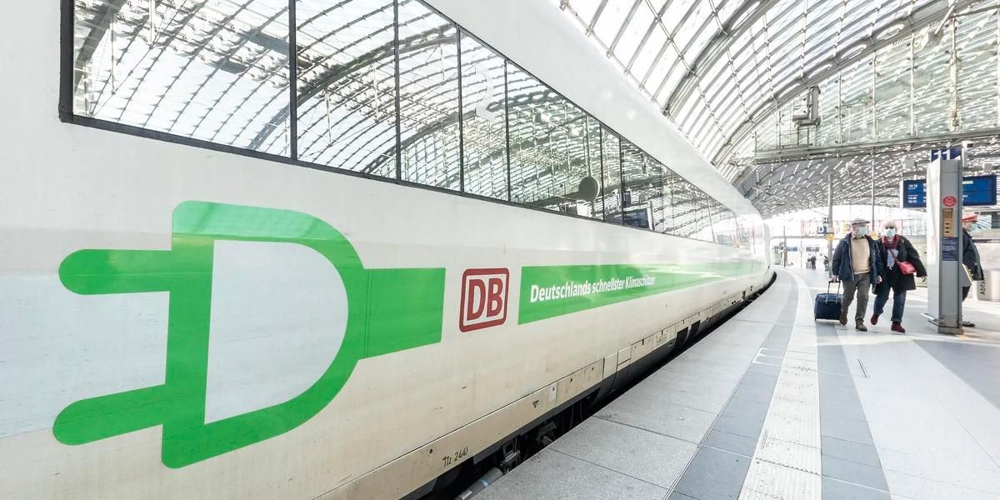
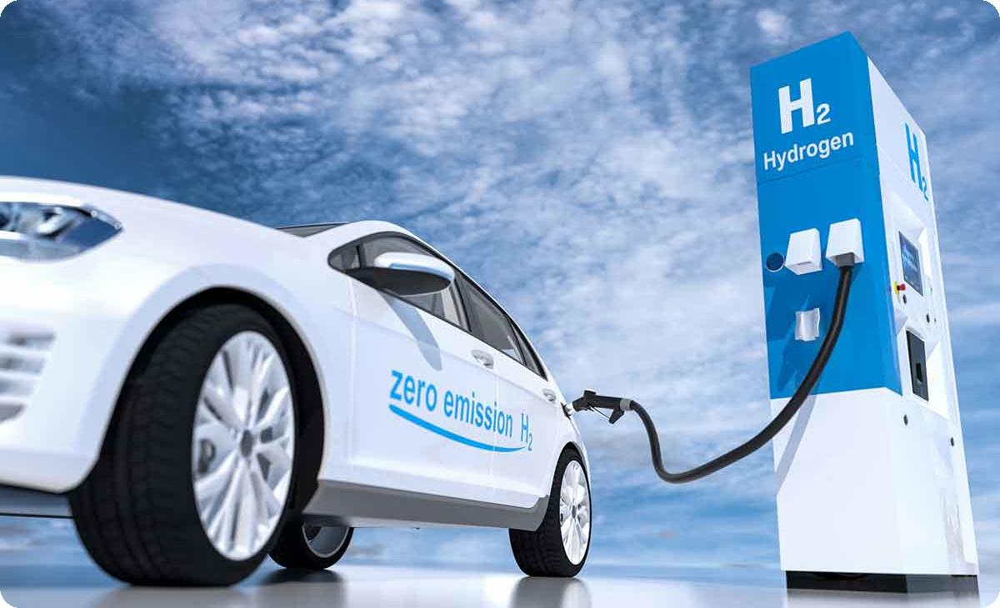
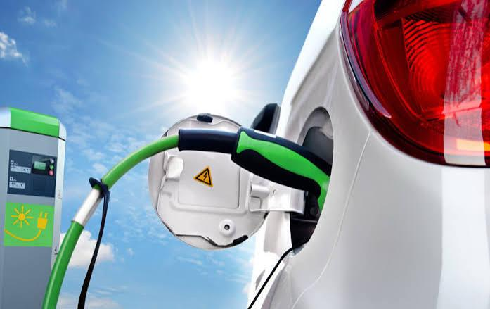

Maxi und Felix
Damit Deutschland im Jahr 2040 vollständig klimaneutral sein kann, muss auch die Mobilität bis dahin vollständig klimaneutral sein. Das heißt konkret der Einsatz von erneuerbaren Energien zu 100%. Ist dies möglich und realistisch - genau darum geht es in diesem Artikel. Damit die Mobilität klimaneutral wird, gibt es verschiedene Wege & Möglichkeiten. Hier stellen wir die vier größten und vielversprechendsten Veränderungen vor:
Die Herstellung von E-Fuels beginnt mit Ökostrom aus erneuerbaren Energien wie Wind und Sonne. Mittels Elektrolyse wird mit diesem Strom Wasser in seine Bestandteile zerlegt, wobei Sauerstoff an die Luft abgegeben wird und sauberer Wasserstoff entsteht. Für die Kohlenstoffkomponente wird parallel CO₂ benötigt, das entweder über Filter aus der Luft und Industrieabgasen gewonnen oder durch die kontrollierte Verbrennung von Biomasse und Reststoffen beschafft wird. In der anschließenden Synthese werden der Wasserstoff und das CO₂ unter hohem Druck und starker Hitze zu einem künstlichen Rohöl zusammengesetzt. Dieses Öl wird schließlich in einer Raffinerie gefiltert und zu fertigem E-Benzin, E-Diesel oder E-Kerosin verarbeitet.

Der Schienenverkehr fährt bereits zu großen Teilen elektrisch, ist aber noch nicht komplett klimaneutral. Während Fern- und U-Bahnen meist mit Ökostrom rollen, sind bisher nur rund 62 Prozent des deutschen Schienennetzes mit Oberleitungen ausgestattet. Auf Nebenstrecken und im Güterverkehr fahren daher oft noch Dieselloks. Um bis 2040 die 100 Prozent Klimaneutralität zu erreichen, setzt die Bahn auf einen gezielten Technik-Mix: Neben dem weiteren Oberleitungsbau schließen Batteriezüge, die kurze Abschnitte ohne Stromleitung per Akku überbrücken, und Wasserstoffzüge für lange, ländliche Strecken die Lücken. Restliche Dieselloks können mit CO₂-neutralen E-Fuels betrieben werden. Der Schlüssel zum Erfolg liegt nun vor allem im Tempo des Netzausbaus.

Wasserstoff kann durch die Elektrolyse von Wasser mithilfe von grünem Strom hergestellt werden. Dabei wird Wasser in seine Bestandteile Wasserstoff und Sauerstoff zerlegt. Der erzeugte Wasserstoff kann anschließend gespeichert und als Energieträger genutzt werden. In einer Brennstoffzelle wird der Wasserstoff wieder zu Wasser umgewandelt, wobei elektrische Energie freigesetzt wird. Die Brennstoffzelle besteht aus zwei Kammern, die durch eine spezielle Membran voneinander getrennt sind. In die eine Kammer wird Wasserstoff aus einem Tank geleitet, während in die andere Sauerstoff aus der Umgebungsluft gelangt. In der Wasserstoffkammer wird das Wasserstoffgas mithilfe eines Katalysators in Protonen und Elektronen aufgespalten. Die Membran lässt jedoch nur die Protonen hindurch. Die Elektronen können die Membran nicht passieren und nehmen daher einen Umweg über einen äußeren Stromkreis. Dieser führt über ein Kabel durch den Elektromotor. Der dabei entstehende elektrische Strom treibt den Motor an. Auf der anderen Seite der Brennstoffzelle treffen die Protonen auf den Sauerstoff sowie auf die Elektronen, die aus dem Stromkreis zurückkehren. Dabei reagieren sie zu reinem Wasser, das anschließend als einziges Abfallprodukt über den Auspuff abgegeben wird. Die Wasserstofftechnologie bietet mehrere Vorteile. Dazu gehören die kurzen Tankzeiten im Vergleich zu batterieelektrischen Fahrzeugen, eine weitgehend temperaturunabhängige Reichweite sowie die Emissionsfreiheit während des Betriebs, da lediglich Wasser ausgestoßen wird.

Die Batterie speichert Energie als Gleichstrom. Der Inverter wandelt diesen dann in Wechselstrom um und regelt wie viel Strom zum Motor fließt (je nach Gaspedalstellung). Der Motor kann in zwei Bestandteile aufgeteilt werden. Einerseits gibt es den Stator (äußerer fester Motorteil) der aus einem Elektromagnet (Kupferspule) besteht. Außerdem ist noch ein Rotor vorhanden (innerer beweglicher Motorteil), welcher fest mit der Antriebswelle der Räder verbunden ist. Diese Konstruktion nutzt Elektromagneten um den Motor anzutreiben. Vorteile sind sofortiges Drehmoment (maximale Beschleunigungskraft von Anfang an), der geringere Gebrauch von Verschleißteilen und der hohe Wirkungsgrad (ca. 90%; bei Benziner 30-40%).

Nun stellt sich die Frage: Ist die vollständige Umsetzung der vier Varianten bis 2040 realistisch?
Während der Schienenverkehr und der Elektromotor im Individualverkehr hervorragende Chancen auf eine vollständige Umsetzung haben, ist eine flächendeckende Einführung von E-Fuels und Wasserstofffortbewegung bis 2040 schlichtweg unrealistisch. Der Schienenverkehr hat das solideste Fundament: Zwar sind aktuell nur 62 Prozent des Netzes mit Oberleitungen ausgestattet, doch die Technologie ist durch den gezielten Mix aus Oberleitungsbau, Batteriezügen und Wasserstoffzügen physikalisch ausgereift. Da der Bahnausbau gesellschaftlich gewollt ist und finanziell stark gefördert wird, entscheidet hier bis 2040 nur das administrative Tempo des Netzausbaus über den Erfolg. Ähnlich realistisch ist der Elektromotor im Pkw-Bereich: Ein physikalischer Wirkungsgrad von rund 90 %, das sofortige Drehmoment und der geringe Verschleiß machen E-Autos finanziell im Unterhalt unschlagbar. Die gesellschaftliche Akzeptanz steigt und die Industrie hat sich bereits umgestellt, was eine tiefe Marktdurchdringung bis 2040 absolut machbar macht. Völlig unrealistisch für eine breite Umsetzung bis 2040 sind dagegen E-Fuels und die Wasserstofffortbewegung. Zwar ist die Funktionsweise der Brennstoffzelle – bei der Wasserstoff am Katalysator in Protonen und Elektronen gespalten wird, um Strom zu erzeugen – physikalisch elegant und emissionsfrei. Auch E-Fuels, bei denen Wasserstoff mit CO₂ zu künstlichem Rohöl synthetisiert wird, lösen das physikalische Gewichtsproblem im Flug- oder Schwerlastverkehr. Gesellschaftlich und finanziell scheitern beide Technologien bis 2040 jedoch an der Realität: Die physikalische Kette der Elektrolyse und Synthese verbraucht gigantische Mengen an Ökostrom, wodurch der Gesamtwirkungsgrad extrem schlecht und die Herstellung astronomisch teuer ist. Da uns bis 2040 die dafür nötigen riesigen Mengen an zusätzlichem grünem Strom fehlen werden, werden E-Fuels und Wasserstoff bis dahin ein Nischenprodukt für vor allem den Flug- und Schiffsverkehr bleiben und können keinen flächendeckenden Beitrag zur klimaneutralen Mobilität leisten.
Zusammenfassend lässt sich sagen: Eine vollständig klimaneutrale Mobilität bis 2040 ist nur in Teilen realistisch. Während der Alltag auf der Schiene und auf der Straße durch direkte Elektrifizierung problemlos CO₂-frei werden kann, bleibt eine flächendeckende Umstellung durch E-Fuels und Wasserstoff bis dahin aus Kosten- und Strommangelgründen unrealistisch.